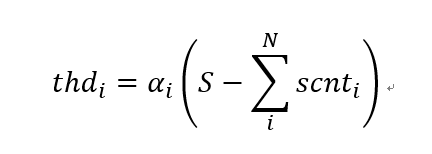
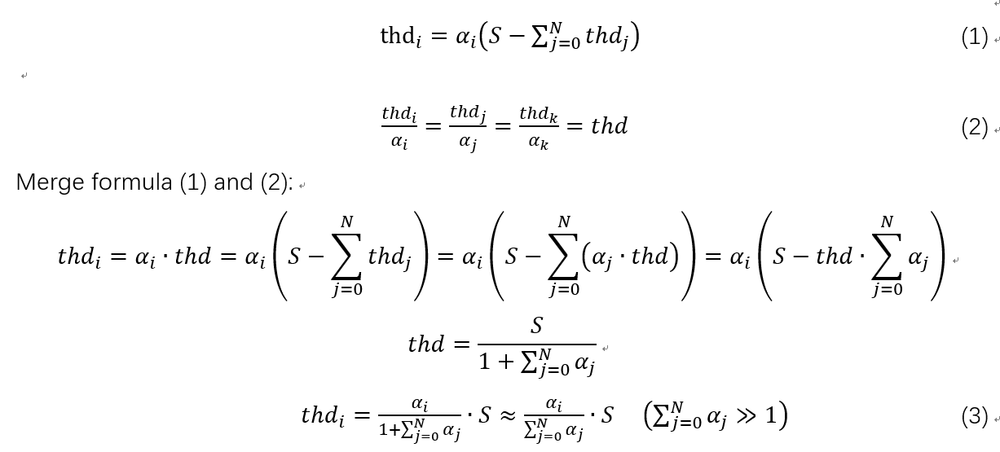
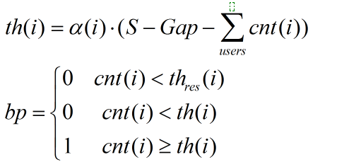

Backpress feedback is used usually to distribute shared resource which shares between all user. Traditional threshold for backpress is configurable and fixed in a scen.For improve the ultilization rate of resource and maximum share resource, override config of backpress threshold is used. For example, a buffer which has 100 store cell is shared with 4 user. The backpress threshold should be large than 25, for example 50. This configure fits in with only 2 user scen. But when there are 4 user use the shared resource at the same time, the threshold 50 may be result in HOL.
DTH aim the target of maximum share buffer ultilization rate in all source users, and has not HOL.
DTH privudes a effective share mechanism that the backpress threshold dynamic decrease along with resource occupation increase.
The formula of standard DTH is:
where,
The threshold for user i calculated by DTH.
Share coeffcient for user i. The more the large one user can use in the shared resource.
The total shared quantity of resouce all users can use.
The occupation quantity of user i. The total scnt of all users is represented by used variable.
The curve from used to threshold is a inverse proportion line, it shows as following:
When all users occur enough resource and trigger DTH backpress. Finilly, when the system is stabe, the scnt(i) is equal to th, so:
Formula above reprents that every user has the mean quantity of resource when stablility. For example, when only one user use the resource, the user can use all of the resource. But when there are four users, thery should share the resource and each can use 1/4 of the total resource.(NOTE: Actually, the maximun occupation which one user can obtain is a/(1+a))
Excessive shared-coefficient is not a good new for new user. For example, there are three users(userA userB and userC) sharing the total resource. So, ecah user occurs 1/3 resource. For the new user(userD), It is not enough and will trigger backpress soon although userD will has 1/4 occupation finally. A reserve space is expected for userD.
Resverse DTH (RDTH) fixs the bug above through split a resversed field from total resource for each user which can reach from resversed threshold. RDTH splits total resource into two fields, one called resversed field which is a sum of all the user's resversed fields, the other called shared field which can be used by all of the users.
There are many solution fix this problem:
The architecture is:
The effect is:
Isolate solution is very effective through use resversed first. But It requires more count and more price.
It is same with the common DTH, just deasset feedback when stat count is small than resversed threshold in calculating the result of feedback.
Assume that the alpha coefficient is various among users, the formular is shown: